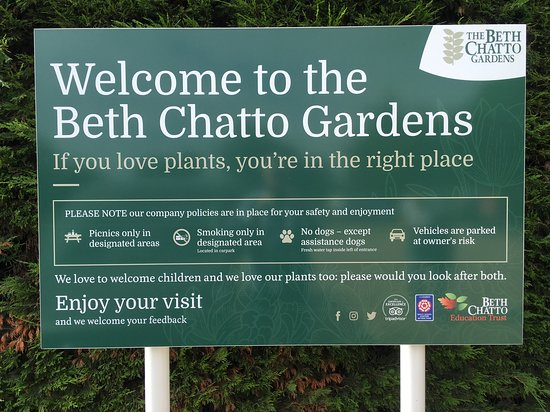
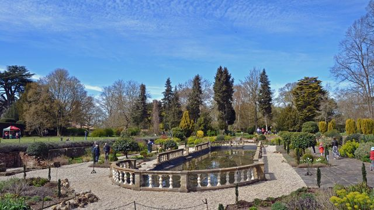
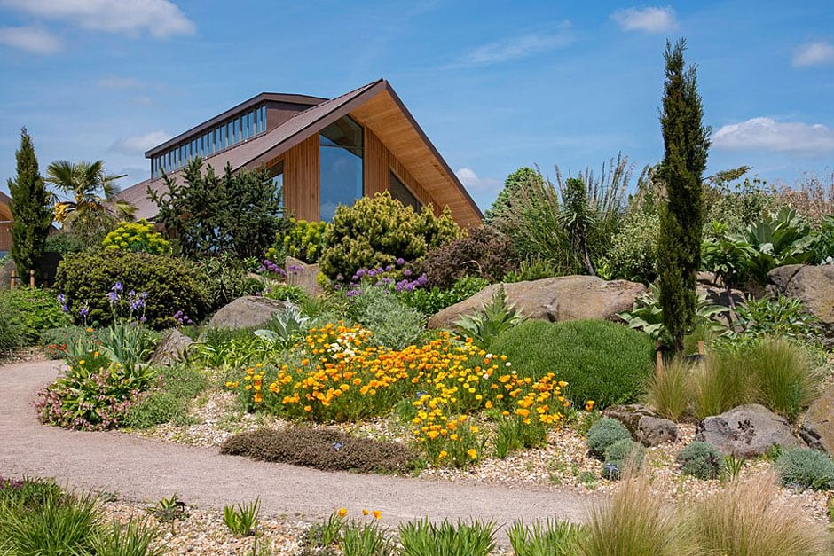
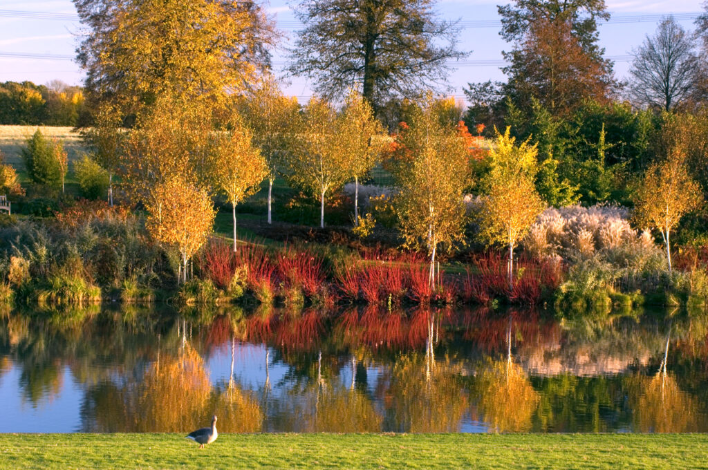
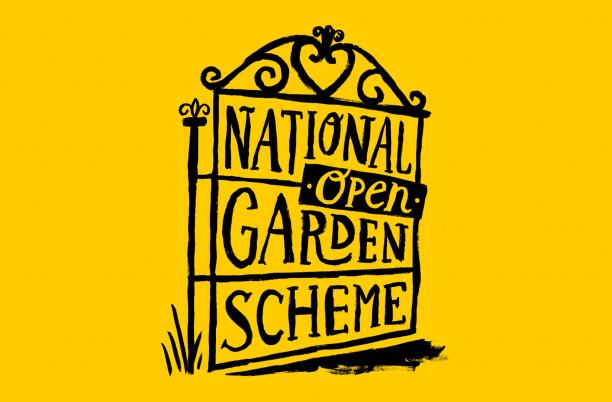
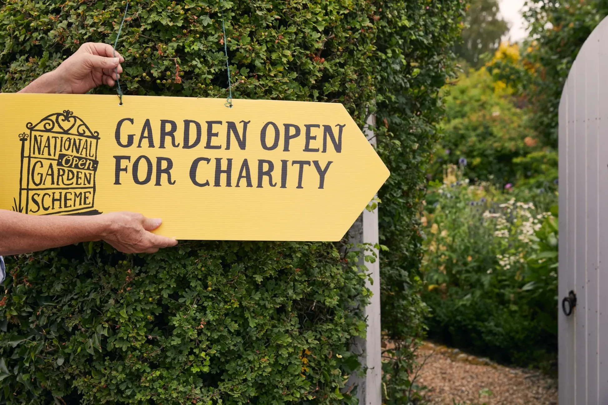
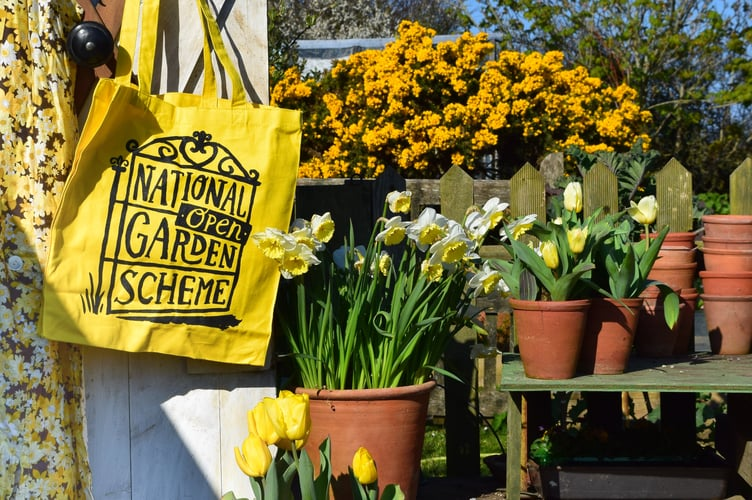
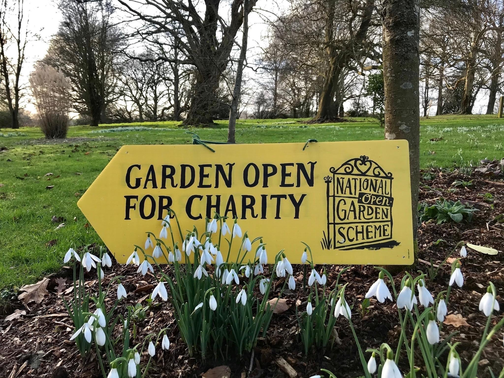
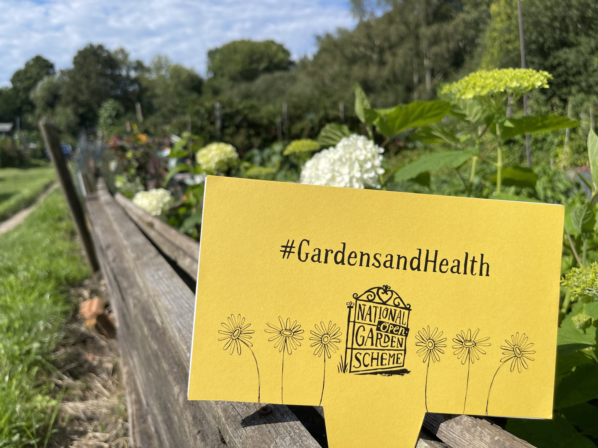

Explore the landscapes of Essex.
Audley End House and Gardens
CB11 4JF
Grand Jacobean Mansion with park landscaped by Capability Brown and garden buildings by Robert Adam.
This location is managed by: English Heritage
Visit WebsiteBeth Chatto's Plants and Gardens
CO7 7DB
Inspirational and world-famous plantsman's garden created by Beth Chatto. Recently added to Historic England's National Heritage List for England.
This location is managed by: Beth Chatto Education Trust
Visit Website
The Gardens of Easton Lodge
CM6 2BB
Gardens created by Countess of Warwick and designed by Harold Peto, the gardens were abandoned in 1950 and are now undergoing restoration.
This location is managed by: Easton Lodge
Visit Website
The Gibberd Garden
CM17 ONA
Created by the post-war architect Sir Frederick Gibberd (1908-1984).
This location is managed by: The Gibberd Garden Trust
Visit WebsiteRHS Hyde Hall Gardens
CM3 8ET
Dynamic hillside garden created in 1955 by the Robinsons and bequeathed to the RHS in 1993.
This location is managed by: The Royal Horticultural Society
Visit Website
Markshall Estate
CO6 1TG
Arboretum and contemporary walled lakeside garden designed by Brita von Schoenaich.
This location is managed by: Markshall Estate Charity
Visit Website

Visit private gardens through the National Garden Scheme
The National Garden Scheme gives visitors unique access to over 3,300 exceptional private gardens in England, Wales, Northern Ireland and the Channel Islands, and raises impressive amounts of money for nursing and health charities through admissions, teas and cake.
Visit Website


